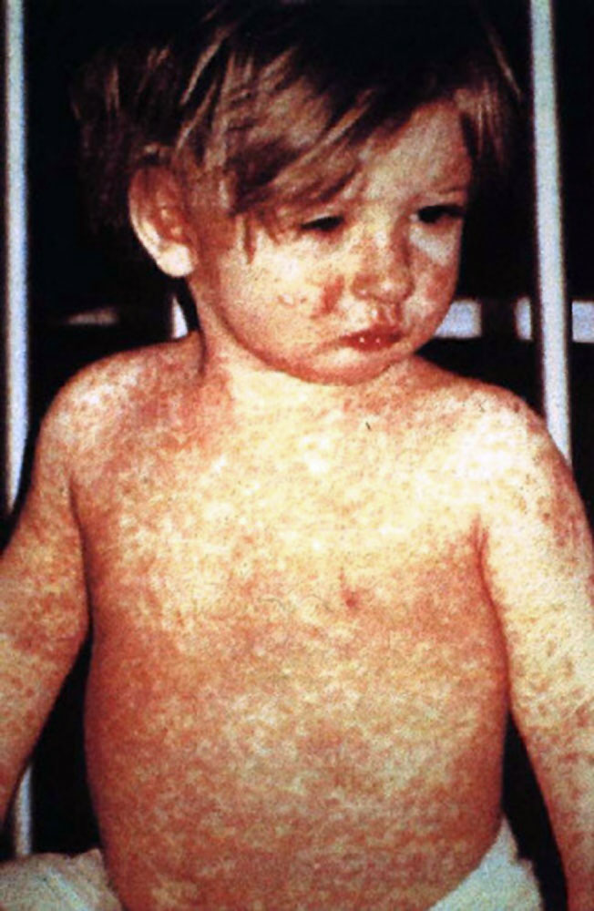

Measles is a highly-contageous and deadly disease that was a scourge of humanity for millenia. Measles is caused by the Rubeola Virus and is related to another virus causing German Measles (Rubella). However, these are distinctly different diseases and the differences in viruses required unique vaccines. The Edmonston strain of Measles was developed in 1963 and quickly became the primary bacterial strain for developing the first viable vaccine for Measles. While development of effective vaccines is a huge undertaking, notable people including Anton Schwarz at Pitman Moore-Dow and Maurice Hilleman at Merck were important contributors for further attenuated vaccine development in the United States. Within the next decade after adoption of these highly-effective vaccines, the number of Measles cases in the United States decreased from millions to few-thousands. These vaccines are the primary defense against Measles worldwide.
The recent increase of "Anti-Vaxxers" or people specifically targeting the health damages caused by vaccination have caused extreme damage for human health and, in the case of Measles, the health of children and vulnerable populations across the globe. A study by Andrew Wakefield published in The Lancet in 1998 showed a link between the Measles-Mumps_Rubella (MMR) vaccine and autism-spectrum disorders. However, multiple subsequent studies have failed to find this same correlation and demonstrated fundamental failures in the original Wakefield Study. Scientific analysis across dozens of laboratories studying MMR vaccination have concluded that the Wakefield study was fraudulent and has since been retracted from publication. However, this fraudulent study has aroused suspicions and fear in both developed and developing countries. The resulting reduction in vaccination rates is directly contributing to recent outbreaks of Measles worldwide, especially in Africa.
Summary of Brief Study
Data tables from the World Health Organization (WHO) were queried in Python/Pandas, aligned by World Regions, then culled for specific representative data for vaccination rates, Measles incidences and infections, and specific year data across the ranges of dates available (back to 1980 when data collection was initiated. These tables include monthly data for Measles infections, and vaccination rates for both First Measles Containing (MCV1) Coverage and Second Measles-Containing Vaccine (MCV2) Coverage by global regions. Correlations across these tables were identified by reformatting and reconstruction of several new tables appended below.
Child with Measles Rash

Global Representation of Measles Deaths by Country per Million Persons
Color representation of the number of deaths by Measles per million persons. Yellow is the lowest number of deaths (0/Million) and Dark Red represents the highest number of deaths (74-850/Million). Image courtesy of Wikipedia (https://en.wikipedia.org/wiki/Measles#/media/File:Measles_world_map-Deaths_per_million_persons-WHO2012.svg) and is based on World Health Organization data table for 2012 (http://www.who.int/entity/healthinfo/global_burden_disease/GHE_Deaths_2012_country.xls?ua=1).
Results of Brief Study
The results of this simple study show a clear correlation between reduction of Measles infectionis with increased vaccination coverage (Measles_Vaccine_Correlation.html). As is directly evident from the Global Representation of Measles Deaths by Country per Million Persons above, deaths in Africa are well above the global average in most countries. Evaluation of the African Region in both Tables here show that, even while the first vaccine dose (MCV1) rates are reasonabel (74% currently), the required second dose (MCV2) is only 26%! This is well below the 90% requirement to induce long-term immunity to the Rubeola virus. These data correlate clearly with the very high increased incidences of Measles in the African Region. There also appears to be a very significant increase of Measles in the Western Pacific Region despite high vaccination rates for MCV1 and MCV2. These data suggest there may be specific countries within the Western Pacific Region that are responsible for higher disease incidence. Indeed, evaluation of the Global Representation of Measles Deaths show that relatively few African countries are responsible for the majority of Measles deaths. Further evaluation of vaccination data at more granular levels (country, state, local regions, cities) would be informative and warranted.
Measles Vaccine Correlation by World Region
| index | WHO-Region | 1980 | 1990 | 2000 | 2005 | 2014 | Percent Increase 2018-2019(Total Measles) | MCV1 Coverage, 1-Year-Olds (%) | MCV2 Coverage, 1-Year-Olds (%) | |
|---|---|---|---|---|---|---|---|---|---|---|
| 0 | 0 | African Region | 1240993 | 481204 | 520102 | 316224 | 71574 | 341.738307 | 74 | 26 |
| 1 | 1 | Region of the Americas | 257790 | 218579 | 1755 | 66 | 19898 | 94.158879 | 90 | 82 |
| 2 | 2 | Eastern Mediterranean Region | 341624 | 59058 | 38592 | 15069 | 28031 | 29.699793 | 82 | 74 |
| 3 | 3 | European Region | 851849 | 234827 | 37421 | 37332 | 16899 | 114.192777 | 95 | 91 |
| 4 | 4 | South-East Asia Region | 199535 | 224925 | 61975 | 83627 | 112418 | 57.246426 | 89 | 80 |
| 5 | 5 | Western Pacific Region | 1319640 | 155490 | 176493 | 128016 | 213366 | 178.401366 | 95 | 91 |
| 6 | 6 | Worldwide | 4211431 | 1374083 | 836338 | 580287 | 462186 | 127.234918 | 86 | 69 |
Measles-Containing Vaccine 1 Vaccination Rates for 1-Year-Olds by World Region
| WHO Region | MCV1 Coverage, 1-Year-Olds (%) | MCV1 Coverage, 1-Year-Olds (%) | MCV1 Coverage, 1-Year-Olds (%) | MCV1 Coverage, 1-Year-Olds (%) | MCV1 Coverage, 1-Year-Olds (%) | |
|---|---|---|---|---|---|---|
| 0 | WHO region | 2018 | 2008 | 1998 | 1988 | 1980.0 |
| 1 | Global | 86 | 81 | 71 | 63 | 16.0 |
| 2 | Africa | 74 | 68 | 53 | 50 | 6.0 |
| 3 | Americas | 90 | 94 | 91 | 74 | 51.0 |
| 4 | South-East Asia | 89 | 76 | 60 | 35 | NaN |
| 5 | Europe | 95 | 95 | 88 | 78 | 55.0 |
| 6 | Eastern Mediterranean | 82 | 74 | 70 | 63 | 15.0 |
| 7 | Western Pacific | 95 | 95 | 84 | 89 | 5.0 |
World Health Organization Sources used in this Study
WHO Data on Active Measles and Rubella (New Tab)First immunization coverage among 1-year-olds (%) (New Tab)
Second immunization coverage among 1-year-olds (%) (New Tab)
-->